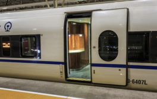

一、有源降噪耳机
完成数字复合式降噪、监听和受话功能，最终得到可移植的软硬件系统。数字复合式降噪模块，能够应对更加复杂的环境噪声。本降噪系统基于前反馈式FxLMS算法，能够实现宽频带的主动消噪，且具有较市面耳机更佳的降噪深度。监听功能对耳罩外部声信号进行功率缩放调整，使耳道处信号基本稳定在某定值分贝。受话功补偿将受话信号进行反馈逆滤波处理，使耳道处受话信号与原信号保持一致。该系统集降噪、监听和受话一体，数字化相较模拟降噪成本低，自适应得到系数更为灵活，并向实时自适应、提升算率和精度等发展方向扩展。
前反馈复合式降噪对1.6kHz白噪降噪的三分之一倍频程平均降噪量为20dB，在以160 Hz为中心频率处具有最大降噪量，降噪深度为34dB。
监听功能能够稳定将参考麦克风处的信号传输至耳道处信号时为某定值分贝大小。受话补偿增强低频基本还原至与原信号一致，使误差小于3dB。
二、高铁门隔声设计
针对高铁隔声门隔声性能的理论计算这一需求，对高铁隔声门采用数值计算和声场仿真两种方法搭建计算模型，分析了隔声门的隔声性能并对隔声门系统薄弱环节进行校正，搭建出一整套门系统隔音性能理论校核算法。该算法既可以对现有门系统进行隔声分析，也可以对高铁隔声门后续的隔声性能优化提供理论支持。
